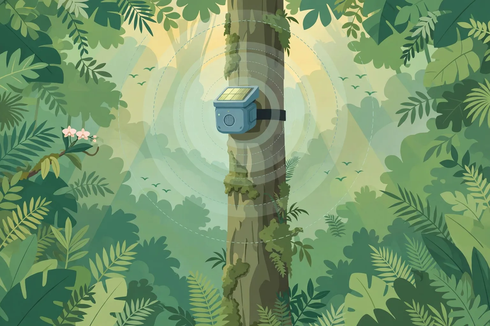
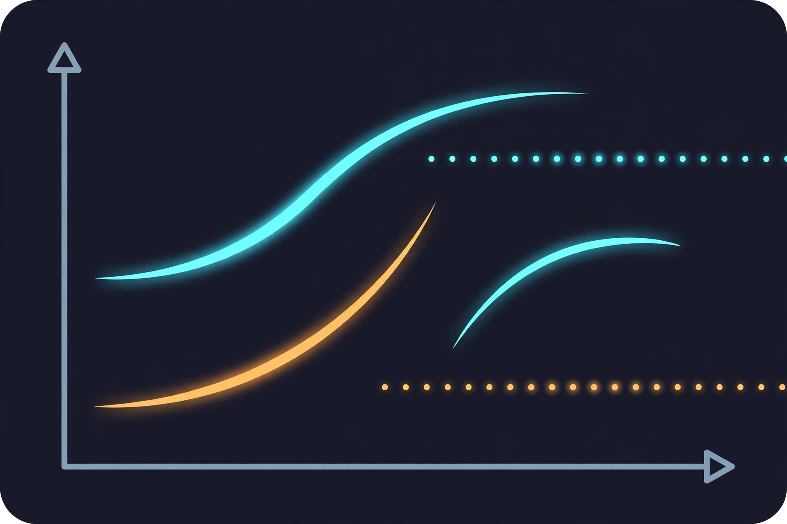

An honest status report from WAVE / bioacoustics.cloud

Illustration: a solar-powered acoustic sensor listening from the rainforest canopy. Generated illustration, not a photograph.
In 2011, a physicist named Topher White visited a gibbon reserve in Borneo and heard something he was not supposed to hear: illegal loggers working within a few hundred metres of a ranger station. The rangers were there. The forest was being cut anyway. The problem was not that nobody cared, or that nobody was watching. The problem was that a rainforest is vast, dense, and dark, and a chainsaw a kilometre away is invisible — but it is not inaudible. Sound travels through a forest in ways that sight cannot follow, and White's idea, which became the organisation Rainforest Connection (RFCx), was disarmingly simple: put ears in the trees, listen continuously, and call for help the moment a chainsaw or a gunshot is heard.
Fifteen years later, that idea has grown into one of the most consequential applications of bioacoustics ever built — not for studying animal communication, but for defending the places animals live. Networks of acoustic sensors now listen for the sounds of crime in rainforests across Africa, Latin America, and Southeast Asia. They have caught illegal logging in real time, mapped poaching pressure across whole landscapes, and given rangers something they have rarely had: a chance to arrive while the crime is still happening, rather than days later, when all that is left is a stump and a trail gone cold.
This article is about how that works, what it has actually achieved, and where its limits lie. The technology is real, and so are its results. But the gap between "we heard a chainsaw" and "the forest is safe" is filled with hard problems — false alarms, patchy connectivity, underfunded ranger teams, and the fact that a sensor can hear a crime it cannot stop. Both halves of that story belong here.
What is true, and what is not yet true
The framing first, as always. The live species predictor on bioacoustics.cloud is BirdNET — a model built by Cornell and Chemnitz that identifies birds first, covering 11,000+ species. It does not detect chainsaws, gunshots, or logging trucks. The broader GPU model (Perch / NatureLM) that the site's roadmap mentions is not connected. Nothing in this article claims that WAVE currently offers a threat-detection service, and nothing here should be read as a product announcement. Threat detection is a different class of model from species identification — it is trained on the acoustic signatures of machines and weapons, not on animal voices — and it is built, operated, and evaluated by other organisations, chiefly Rainforest Connection and the research teams whose work is cited below.
What WAVE does today is analysis and structured access to sound and to the public archives that hold it. What this article does is explain, accurately, how acoustic threat detection works and what the evidence shows, so that readers can tell a real capability from a pitch. The distinction matters because the stakes are high: when a system claims to protect a forest, people in that forest depend on it being true.
Why listening works where watching fails
The core problem of forest protection is a problem of scale and visibility. A protected area can cover thousands of square kilometres. A ranger team may number in the dozens. The forest itself defeats every conventional form of surveillance: the canopy blocks satellite imagery of what happens beneath it, camera traps see only a few metres in front of their lens, drones cannot fly under the canopy, and patrols can cover only a fraction of the ground. A poacher with a chainsaw or a rifle can work for hours without being seen by anyone.
Sound behaves differently. A chainsaw's whine, a gunshot's crack, a truck engine's drone, a hunting dog's bark — these are loud, distinctive, and they propagate. In still forest air, a gunshot can be heard for a kilometre or more; a chainsaw, further. Sound also travels around obstacles that block sight: a sensor does not need a line of sight to a crime, only a line of hearing. And sound is continuous. A camera trap takes a photograph when something crosses its beam; an acoustic sensor listens all the time, through the night, in the rain, when no patrol is out.
That continuity is what turns a recording device into an alarm system. The idea is not to collect audio and study it later, though the recordings have enormous scientific value. The idea is to analyse the audio as it arrives, recognise the signature of a threat, and send an alert — with a location and the captured audio — to a ranger's phone, within seconds or minutes, while the loggers are still cutting or the poachers are still in the forest. That is the difference between evidence and intervention, and it is the whole point.
The signature matters. A chainsaw has a characteristic whine with a strong harmonic structure; a gunshot is a short, sharp impulsive crack; a truck engine is a low, sustained drone. Machine-learning models are trained on libraries of such sounds, labelled by human experts, until they can separate a chainsaw from a cicada chorus and a gunshot from a falling branch.
The Guardian: from discarded phones to a purpose-built network
Rainforest Connection's system, called the Guardian, has gone through three generations, and its history is a useful map of how conservation technology actually develops — not in a single breakthrough, but in a series of practical compromises.
The first Guardian, in use from 2015 to 2019, was built from repurposed smartphones. Old phones — the kind that pile up in drawers and landfills by the billions — were fitted with a small solar panel, an external microphone, and custom software, then placed high in the rainforest canopy, where they could capture sound in every direction. The phones streamed audio back to cloud servers over the mobile network, where AI models analysed every sound in real time and sent instant alerts to rangers when a threat was detected. The choice of phones was deliberate: they were cheap, available, already contained a microphone, a processor, and a radio, and repurposing them was both economical and, in its small way, a form of recycling.
The first real test came in Sumatra, where the system detected illegal logging in real time and allowed authorities to intervene and stop the activity — a result reported in the conservation literature and summarised in a 2025 review in Frontiers in Ecology and Evolution, which notes that the initial version "successfully detected illegal logging in real time in Sumatra, allowing authorities to intervene and stop the activity." From there the system expanded to regions in Africa, Latin America, and Southeast Asia.
The second Guardian (2020–2025) moved from repurposed phones to purpose-built custom hardware, with better power management, reliability, and connectivity. The third Guardian, the G3, in use from 2026, combines three highly sensitive microphones that capture ambient sound within a radius of 50 metres to 1,500 metres depending on the source of the sound, with solar panels, on-board power management and lithium-iron-phosphate battery packs designed to collect the flecks of light that make their way through the forest canopy. It is Starlink-compatible, which matters in places where the mobile network does not reach — the satellite link changes what "real-time" can mean in a remote forest.
The numbers Rainforest Connection reports for the system as a whole, on its Guardian page, are: more than 750,000 hectares of rainforest land protected to date, and more than 4,200 species and 310 threatened species detected, identified and monitored. The organisation also reports that, according to the United Nations, up to 90% of logging in tropical rainforests is illegal — the figure that explains why it starts with logging: "if you can protect the trees, you end up protecting everything else," in the organisation's words, because illegal deforestation is a gateway activity to clearing rainforest, one of the primary causes of climate change.
Those headline numbers deserve the same treatment as any other claim in this article: they are self-reported by the organisation, not independently audited figures, and "hectares protected" is a broad term that covers areas under monitoring, not areas where logging has been proven to have stopped. The more specific, checkable claims — the Sumatra intervention, the peer-reviewed gunshot studies described below — are where the evidence is strongest, and this article leans on those.
The elephant study: what gunshots sound like at landscape scale
The most rigorous evidence for acoustic threat detection does not come from a technology company. It comes from a long-running scientific project: the Elephant Listening Project at the Cornell Lab of Ornithology, led by Peter Wrege, which has been recording the sounds of African forest elephants in Central Africa for well over a decade.
Forest elephants are among the hardest animals on Earth to count. They live in dense rainforest, they are shy and largely nocturnal, and they range over huge landscapes. Traditional survey methods — counting dung piles along transects, for instance — are expensive and slow. Acoustic monitoring offered an alternative: elephants produce low-frequency rumbles that travel far through the forest, and a grid of recorders can hear them across a large area. Wrege's team placed 50 custom audio recorders across a 1,250-square-kilometre grid in the Republic of Congo — one recorder per 25-square-kilometre grid square, mounted 23 to 30 feet up in the treetops, just above the reach of an elephant's trunk — and recorded continuously.
The scientific results were striking. In a 2017 paper in Methods in Ecology and Evolution, Wrege and colleagues showed how passive acoustic monitoring could be used to investigate cryptic behaviour, estimate population size, quantify threats, and assess the efficacy of conservation strategies — and that acoustic surveys could estimate elephant numbers as accurately as the standard method of counting dung piles. A companion study in the Journal of the Acoustical Society of America the same year, by Keen and colleagues, tested an automated elephant-call detector on nearly 4,000 hours of field recordings from five forest clearings and reported an 83.2% true positive rate at a 5.5% false positive rate — about 20 false positives per hour. That false positive rate matters: it is the price of automation, and it is high enough that human review remains essential. The context for all of this is grim: the same paper notes that forest elephant populations in Central Africa had declined by more than 60% in the last decade.
Then the recorders heard something else. Running the audio through analysis, the team found gunshots — many of them. Assuming gunshots were a good proxy for poaching attempts, Wrege asked the same company that had built the elephant detector, Conservation Metrics, to build another neural network, this time to look for the sounds of gunshots. The gunshot data turned out to be a conservation tool in its own right: by measuring the patterns of gunshots in the forest, the team could help inform anti-poaching efforts and measure their effectiveness. When anti-poaching patrols increased in 2018, for example, the sound of gunshots in the recordings decreased.
The most detailed study of the elephants' own response to gunfire came later. Swider and colleagues, using the same 1,250-square-kilometre grid of 50 acoustic sensors in the Republic of Congo, investigated the landscape-scale behavioural response of forest elephants to poaching events. They detected eight automatic weapon fire events over 1.5 years of recording (2017–2019), and examined elephant vocalisations at grid sites within 10 kilometres of the gunfire in the 48 hours surrounding each event, compared with paired 48-hour control periods free of gunfire. Two findings stand out. First, fewer vocalisations were detected before gunfire events than during control periods — suggesting elephants show behavioural responses to poacher presence before any shots are fired, going quiet when humans are near. Second, immediately following gunfire events, a significant increase in elephant calls was detected, which may indicate increased communication to facilitate group cohesion and movement after a frightening event. The elephants, in other words, were not only victims of the gunfire; they were witnesses whose behaviour recorded it, and whose silence before a shooting may itself be a signal that poachers are in the area.
A related 2024 study by Wrege and colleagues used the same acoustic grid to show that forest elephants become more nocturnal when exposed to perceived risk such as poaching, and that logging is perceived as a risk on moderate time and small spatial scales. The point is general: passive acoustic monitoring does not only detect threats directly, as gunshots. It also detects the effects of threats on animal behaviour — shifts in when animals call, where they call, and how much — which can be early indicators of changing impacts before a population collapses.
How the alert chain actually works
Understanding the technology means understanding the chain from sound to action, because every link in the chain is a place where the system can fail. The chain, as Rainforest Connection describes it on its Guardian page, has three stages: detect, alert, intervene.
Detect. The Guardian device listens continuously and either streams audio to the cloud for analysis (where mobile networks reach) or analyses it on-board and sends an alert via satellite (where they do not). The AI model flags sounds matching threat signatures — chainsaws, vehicle engines, hunting dogs, gunshots — and also, in the broader system, identifies animal species from their calls. The detection radius depends on the source: a chainsaw may be detectable from much further away than a quiet footstep, and the G3's stated capture radius runs from 50 metres to 1,500 metres depending on the source.
Alert. When a threat is detected, the system sends a real-time notification with the threat's location and the captured audio to rangers via a dedicated mobile app. The audio matters: a ranger who can hear the chainsaw recording can judge for themselves whether the alert is real, and can hear details — how many saws, whether a truck is involved — that a bare "alert" cannot convey. The location matters more: a gunshot heard by several sensors can be triangulated, narrowing the search area from a whole forest to a patch of it.
Intervene. An agent nearby receives the alert and responds — ideally before the damage is done. This is the link that depends least on technology and most on people: a ranger team that is trained, equipped, legally empowered, and close enough to reach the site in time. Rainforest Connection's work with the Tembé tribe in Brazil, where Guardian systems empower Indigenous rangers to defend their ancestral lands against illegal logging, is an example of the model working as intended — the technology in the hands of the people who live in the forest and have the strongest reason to protect it.
The same chain, with variations, is used elsewhere. In Africa, Rainforest Connection has reported that monitoring one key road used by poachers could help protect a large area, and that its data helped partners target the times and days each month when poaching was statistically highest — after dark and during weekends. Acoustic data does not only trigger individual responses; aggregated over months, it reveals the rhythms of illegal activity and lets a small ranger force be in the right place at the right time.
The false alarm problem
Every honest account of acoustic threat detection must spend time on false positives, because they are the technology's most stubborn weakness and the reason human judgement remains indispensable.
A gunshot is a short, sharp sound. So, unfortunately, is a branch cracking under its own weight, a tree falling, a clap of thunder, a dripping water drop amplified by a resonant surface. A chainsaw has a distinctive whine — but so, at a distance, do some insects, some machinery, and some motorcycles. The models are trained to separate these, and they have improved greatly with deep learning, but the forest is an uncontrolled environment: rain on a microphone, wind in the canopy, a sensor slowly degrading in humidity and heat, all shift the sound in ways the training data may not have covered. The elephant-call detector's 5.5% false positive rate — about 20 false alarms per hour — gives a sense of the scale: even a good detector, in a hard environment, cries wolf often.
Each false alarm has a cost. A ranger team that hikes for hours through difficult terrain to find nothing is a team that is tired, demoralised, and unavailable when a real alert comes. In a system where rangers are already overstretched, a high false alarm rate can be worse than a missed detection, because it teaches people to ignore the system. This is a well-known failure mode in alarm systems of every kind, from smoke detectors to hospital monitors, and acoustic conservation is not exempt. The mitigations are real — better models, multi-sensor confirmation, human review of the audio clip before dispatch, tuning thresholds to the local soundscape — but they are mitigations, not solutions. Reducing false positives remains, in the words of one survey of the field, an active and still unfinished area of research.
There is a second, quieter failure mode: false negatives. A poacher who knows sensors are present may use a quieter weapon, work during heavy rain that masks sound, or avoid the monitored area altogether — displacement, not deterrence. A chainsaw with a muffler, a crossbow, a snare: none of these makes the sounds the models are trained to hear. Acoustic monitoring is a powerful tool against the threats it can hear, and silent against the ones it cannot. It must be combined with other tools — camera traps, patrols, community intelligence, satellite monitoring — not treated as a replacement for them.
And there is a third limit, which has nothing to do with acoustics: the response. An alert is only useful if someone can act on it. In many of the places where illegal logging and poaching are worst, ranger teams are small, underpaid, under-equipped, and sometimes endangered by the very people they are sent to stop. Corruption, unclear land tenure, and lack of legal follow-through can mean that even a successful intervention — loggers caught in the act — leads nowhere. A sensor network can tell you that a crime is happening. It cannot arrest anyone, cannot prosecute, and cannot change the economics that make illegal logging profitable. The technology is a force multiplier for enforcement; it is not a substitute for it.
Listening to people: the surveillance question
There is also an ethical question that the field is only beginning to grapple with, and it is the same question that runs through the WAVE blog's article on the ethics of listening to wild animals — except that here the animals are not the only ones being listened to. An acoustic sensor in a forest hears everything: not only chainsaws and elephants, but the voices of people who live in and use the forest — Indigenous communities, smallholders, hunters, children. A system built to detect threats can also, incidentally, record conversations, and a system that records conversations is a surveillance system, whether or not that was its intent.
The responsible answers are procedural, not technical: record and store as little as possible; process audio on the device and transmit only detections and short clips, not continuous streams; give local communities control over where sensors go and who can access the data; and be explicit, in writing, about what is recorded, who hears it, and how long it is kept. Rainforest Connection's emphasis on working alongside tribes, villages, and local communities — and its Tembé project, in which the community's own rangers are the responders — points in the right direction.
The data dividend: a forest's biography in sound
There is a second dividend from threat-detection networks that is easy to overlook, because it is not the reason they are funded: they record everything else as well. A Guardian listening for chainsaws is also listening to birds, frogs, insects, and mammals, 24 hours a day, for years. Rainforest Connection reports that its system has detected, identified, and monitored more than 4,200 species, including 310 threatened species. That is not a side effect; it is one of the largest continuous biodiversity datasets in existence for the forests it covers.
The value of that dataset is both scientific and political. Scientifically, it provides baselines: what a forest sounded like before a road was built, before a logging concession opened, before a drought. When a species disappears from the recordings, that is evidence — timestamped, reviewable, hard to dispute. Politically, it provides leverage: a community or a government negotiating for increased protection can point to a recorded, measured soundscape rather than an anecdote. The same recordings that catch a chainsaw can document a forest's recovery, as species return and the soundscape fills in again.
This is where the work connects to the broader bioacoustics programme that WAVE is part of. The open archives — Xeno-canto with more than a million recordings, the Macaulay Library with more than 3.2 million audio recordings as of November 2026, the Watkins Marine Mammal Sound Database with more than 15,000 annotated clips — are the training data and the reference library for the whole field, including threat detection. The models that distinguish a chainsaw from a cicada are trained the same way the models that identify a bird are trained: on labelled recordings, curated by experts, shared openly.

Illustration: a stylised spectrogram-style diagram, showing how animal and human sounds appear as shapes in frequency over time. Generated illustration — not a real spectrogram or real data.
What the evidence supports, and what it does not
It is time to draw the balance sheet, because the field deserves one.
What the evidence supports: acoustic sensors can detect chainsaws and gunshots in real time and can trigger interventions that stop illegal activity — demonstrated in Sumatra, and in the peer-reviewed elephant studies that used gunshot detections to measure poaching pressure and the effectiveness of patrols. Acoustic monitoring can estimate populations of cryptic species as accurately as traditional methods. It can reveal behavioural responses to human disturbance that no other method can see. It can map the rhythms of illegal activity and help allocate scarce ranger effort. And it produces, as a by-product, biodiversity data of lasting scientific value.
What the evidence does not support: that acoustic monitoring alone can stop illegal logging or poaching; that detection rates translate directly into forests saved; that the technology works equally well everywhere, for every threat, in every soundscape; or that a system can be installed and left to run without human review, local partnership, and a functioning enforcement chain. The 2025 Frontiers review of conservation technology puts it carefully: passive acoustic monitoring systems are "primarily limited to detecting activities that generate sounds," and they require technical training — a modest sentence that carries a lot of weight. A tool that hears only sound cannot hear a snare, a poisoned carcass, or a bribe.
The honest framing for anyone considering or funding this work is therefore: acoustic threat detection is a proven, valuable, and still-improving tool for a specific job — hearing crimes that make noise, across large areas, continuously — and it works best as part of a system that includes people, law, and community consent. It is not a silver bullet, and the organisations that build it do not, at their best, claim that it is.
Where this goes next
The direction of travel is clear enough to describe. Models are getting better at separating threats from the forest's own noise, including through foundation models trained on broad bioacoustic data that can be adapted to new sounds with less labelled data. Hardware is getting cheaper and more robust: low-cost recorders such as AudioMoth have already democratised passive acoustic monitoring for researchers who could never afford a network of Guardians, and the gap between a research recorder and a real-time alerting device is narrowing as on-device processing improves. Connectivity is improving too, as satellite links reach places the mobile network never will. And the integration is deepening: acoustic alerts are being fed into the same management systems — such as EarthRanger — that hold patrol tracks, camera-trap images, and satellite deforestation alerts, so that a gunshot, a chainsaw, and a clearing in the canopy can be seen together, as one event.
The most important next step, however, is not technical. It is institutional: making sure that the people who live in the forests being monitored are partners in the monitoring, not subjects of it; that rangers have the resources to respond to the alerts they receive; and that the data are shared with the communities and governments that need them, under terms they control. The technology can hear a forest being cut. Only people can stop it.
That is the lesson the forest has been teaching since 2011, when a physicist in Borneo heard loggers next to a ranger station and realised that the problem was never that nobody was listening. The problem was that listening had no consequences. The work since then — the Guardians in the canopy, the recorders in the Congo, the elephants going quiet before the guns — has been about giving listening consequences. It has worked, sometimes, in some places, for some threats. The task now is to make it work more often, in more places, for more of the forest, and to be honest about the distance still to go.
Glossary
- AudioMoth: a low-cost, open-source acoustic recorder widely used for passive acoustic monitoring; it records but does not, by itself, send real-time alerts.
- False positive / false negative: a false positive is an alert when no threat is present (e.g. thunder mistaken for a gunshot); a false negative is a missed threat. Both matter, and reducing one often increases the other.
- Guardian: Rainforest Connection's solar-powered acoustic monitoring device (G1, 2015–2019, repurposed smartphones; G2, 2020–2025, custom hardware; G3, 2026–, three microphones, satellite-compatible).
- Passive acoustic monitoring (PAM): recording sound without emitting it, typically with autonomous recorders left in place for weeks or months — or, in real-time systems, analysed as it arrives.
- Triangulation: estimating the location of a sound by comparing when it arrives at several sensors in different places.
- EarthRanger: a protected-area management system that integrates data from sensors, patrols, and satellites into a single operational picture.
Frequently asked questions
How far away can a sensor hear a chainsaw or a gunshot? It depends on the sound, the terrain, the weather, and the sensor. Rainforest Connection states its G3 device captures ambient sound within a radius of 50 metres to 1,500 metres depending on the source. A gunshot in still air can carry a kilometre or more; dense vegetation, wind, and rain all reduce the range.
Does the system work where there is no mobile signal? In the earlier generations, no — the phones and G2 devices depended on mobile networks to stream audio. The G3 is Starlink-compatible, and satellite-connected variants analyse audio on-board and send only alerts, which reduces the bandwidth needed. Connectivity remains one of the main practical constraints in remote forest.
Can poachers just avoid the sensors? Yes — displacement is a real limit. Acoustic monitoring covers the area its sensors can hear; poachers who move elsewhere, use quieter methods (snares, crossbows), or work during heavy rain can evade it. That is why it must be combined with patrols, camera traps, community intelligence, and satellite monitoring.
Who hears the recordings? That depends on the deployment, and it is a question that should be asked explicitly before any system is installed. Responsible deployments minimise what is stored, transmit detections and short clips rather than continuous audio, and give local communities a say in sensor placement and data access.
Does WAVE offer gunshot or chainsaw detection? No. The live predictor on bioacoustics.cloud is BirdNET (birds-first, 11,000+ species). Threat detection is a different model class, built and operated by organisations such as Rainforest Connection and the research teams cited here. This article describes their work; it does not claim it as WAVE's.
References
- Rainforest Connection — Real-Time Threat Detection (Guardian system, G1/G2/G3, 750,000+ hectares, 4,200+ species): https://rfcx.org/guardian
- Rainforest Connection — impact and projects: https://rfcx.org/impact
- The rising tide of conservation technology: empowering the fight against poaching and unsustainable wildlife harvest. Frontiers in Ecology and Evolution (2025): https://www.frontiersin.org/journals/ecology-and-evolution/articles/10.3389/fevo.2025.1527976/full
- Wrege, P. H., Rowland, E. D., Keen, S., & Shiu, Y. (2017). Acoustic monitoring for conservation in tropical forests: examples from forest elephants. Methods in Ecology and Evolution 8, 1292–1301. doi:10.1111/2041-210X.12730
- Keen, S. C., Shiu, Y., Wrege, P. H., & Rowland, E. D. (2017). Automated detection of low-frequency rumbles of forest elephants: A critical tool for their conservation. Journal of the Acoustical Society of America 142, 2715–2726.
- Swider, C. R., Gemelli, C. F., Wrege, P. H., & Parks, S. E. (2022). Passive acoustic monitoring reveals behavioural response of African forest elephants to gunfire events. African Journal of Ecology 60, 882. doi:10.1111/aje.13070
- Wrege, P. H., et al. (2024). Early detection of human impacts using acoustic monitoring: An example with forest elephants. (Acoustic grid, 1,250 km², northern Republic of Congo.)
- Rainforest Connection — Guardian story, Topher White's 2011 Borneo visit: https://www.aiforcause.org/stories/rainforest-connection-guardians
- Cornell Elephant Listening Project — Congo rainforest recordings and gunshot findings: https://www.mentalfloss.com/science/ecology/listen-congo-rainforests-sounds
- Wrege and the Elephant Listening Project — AI, gunshot detection, and ranger response: https://krinmo.com/2019/10/28/elephants-under-attack-have-an-unlikely-ally-artificial-intelligence/
- Xeno-canto — open archive of wildlife sounds: https://xeno-canto.org/
- Macaulay Library, Cornell Lab of Ornithology: https://www.macaulaylibrary.org/ ; history and scale: https://alumni.cornell.edu/cornellians/macaulay-library/
- Watkins Marine Mammal Sound Database (WHOI): https://cis.whoi.edu/science/B/whalesounds/index.cfm
- WAVE / bioacoustics.cloud — live site and honest status notes: https://bioacoustics.cloud/ ; local regen notes,
~/workspace/your_files/hostinger-email/sites/bioacoustics.cloud-regen/README-DEPLOY.md - WAVE agent project (separate from bioacoustics.cloud): https://wave.agifuturefoundation.org/
- AGI Future Foundation: https://agifuturefoundation.org/
Staging note: this article is staged locally for the WAVE bioacoustics programme. It has not been published, deployed, or shared. All generated images in this article are labelled illustrations, not photographs or real data.